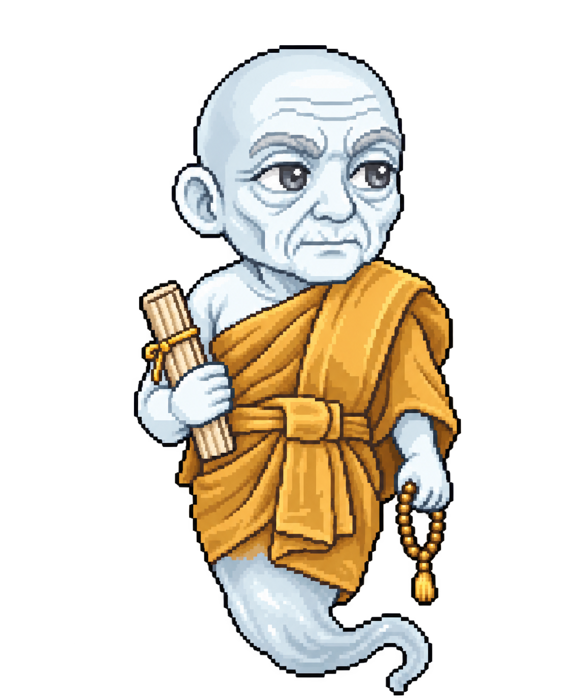
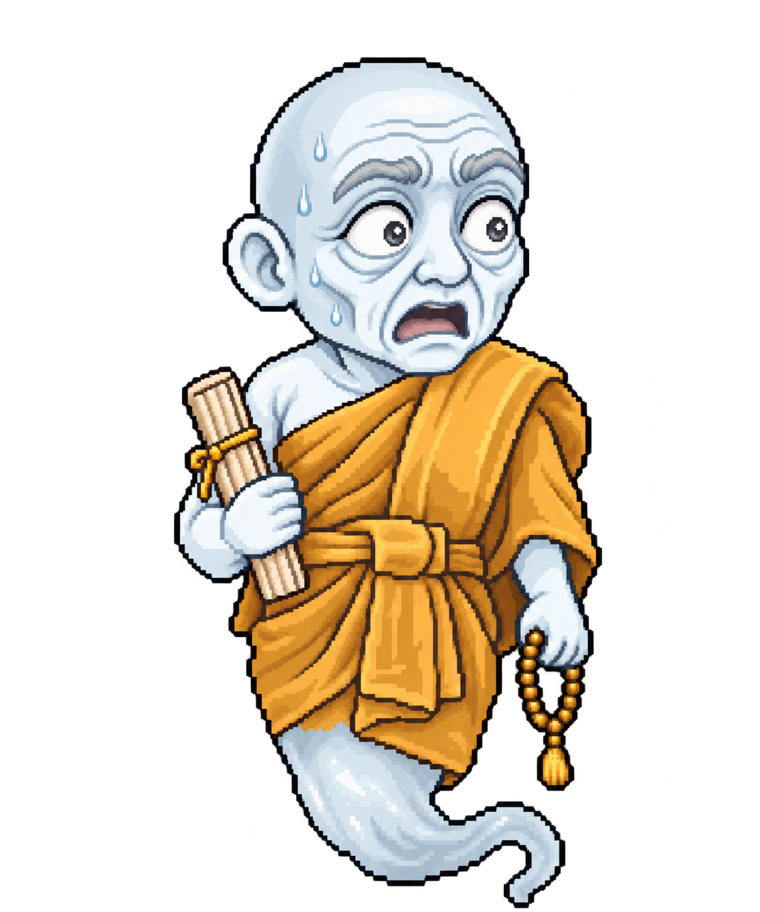

Recovered drawing; same canvas 1254×1254, RGBA. Renderer alignment still needs visual review.
สร้างด้วย built-in image_gen โดยอ้างอิงภาพเดิมทุกภาพ น้ำตาอยู่ในภาพ พื้นหลัง RGBA โปร่งใส ตรวจภาพโดยตรงแล้ว; ยังไม่ได้ตรวจใน renderer/browser ตามข้อจำกัดของ brief
1254×1254; หน่วยภาพและกรอบเดียวกับต้นฉบับ


1254×1254; หน่วยภาพและกรอบเดียวกับต้นฉบับ


1254×1254; หน่วยภาพและกรอบเดียวกับต้นฉบับ


1254×1254; หน่วยภาพและกรอบเดียวกับต้นฉบับ


1145×1374; หน่วยภาพและกรอบเดียวกับต้นฉบับ


1254×1254; หน่วยภาพและกรอบเดียวกับต้นฉบับ


pol/gen ใช้ officer เดิม; สร้างด้วย built-in image_gen โดยอ้างอิงต้นฉบับทุกครั้ง ตรวจภาพโดยตรง: ตัวเดิม ชุด สี ลายเส้น ของถือ และหางยังตรงกับต้นฉบับ พร้อมตาเบิก ปากตกใจ และเหงื่อในภาพ ไม่ได้เปิด browser หรือทดสอบ renderer
1254×1254; RGBA โปร่งใส; ขนาดกรอบเท่าต้นฉบับ ไม่มีการ resample; ขอบตัว alpha ≥128 คลาดเคลื่อน 0–3 px และขอบล่างไม่เกิน 2 px (ไม่ได้ยืนยันจุดยึดตรงทุกพิกเซล)
1254×1254; RGBA โปร่งใส; ขนาดกรอบเท่าต้นฉบับ ไม่มีการ resample; ขอบตัว alpha ≥128 คลาดเคลื่อน 0–3 px และขอบล่างไม่เกิน 2 px (ไม่ได้ยืนยันจุดยึดตรงทุกพิกเซล)
1199×1312; RGBA โปร่งใส; ขนาดกรอบเท่าต้นฉบับ ไม่มีการ resample; ขอบตัว alpha ≥128 คลาดเคลื่อน 0–3 px และขอบล่างไม่เกิน 2 px (ไม่ได้ยืนยันจุดยึดตรงทุกพิกเซล)
1145×1374; RGBA โปร่งใส; ขนาดกรอบเท่าต้นฉบับ ไม่มีการ resample; ขอบตัว alpha ≥128 คลาดเคลื่อน 0–3 px และขอบล่างไม่เกิน 2 px (ไม่ได้ยืนยันจุดยึดตรงทุกพิกเซล)


built-in image_gen อ้างอิงต้นฉบับทุกครั้ง; ตรวจภาพโดยตรงแล้ว ตัวเดิม ชุด สี ลายเส้น ของถือ และหางยังตรงกับต้นฉบับ มีตาเบิก ปากตกใจ เหงื่อในภาพ พื้นหลัง RGBA โปร่งใส ไม่ได้เปิด browser หรือทดสอบ renderer ขนาดกรอบเท่าเดิม; ขอบ alpha ≥128 คลาดเคลื่อนสูงสุด 4 px จึงไม่ยืนยันจุดยึดตรงทุกพิกเซล
1254×1254; ขอบ alpha ≥128 ต้นฉบับ → ภาพท่า: (266,3,988,1247) → (265,2,990,1247); ไม่ resample หรือแก้ alpha
1254×1254; ขอบ alpha ≥128 ต้นฉบับ → ภาพท่า: (303,6,1018,1244) → (300,2,1019,1245); ไม่ resample หรือแก้ alpha
1254×1254; ขอบ alpha ≥128 ต้นฉบับ → ภาพท่า: (362,17,1015,1229) → (362,17,1016,1229); ไม่ resample หรือแก้ alpha
1199×1312; ขอบ alpha ≥128 ต้นฉบับ → ภาพท่า: (133,16,1060,1296) → (131,13,1062,1298); ไม่ resample หรือแก้ alpha